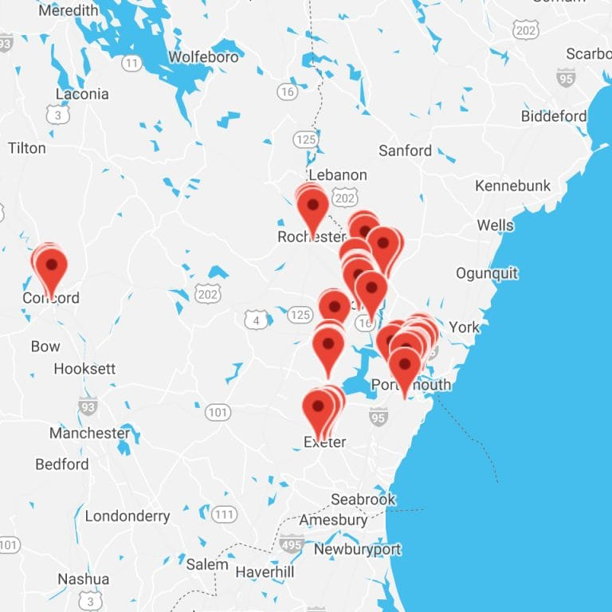
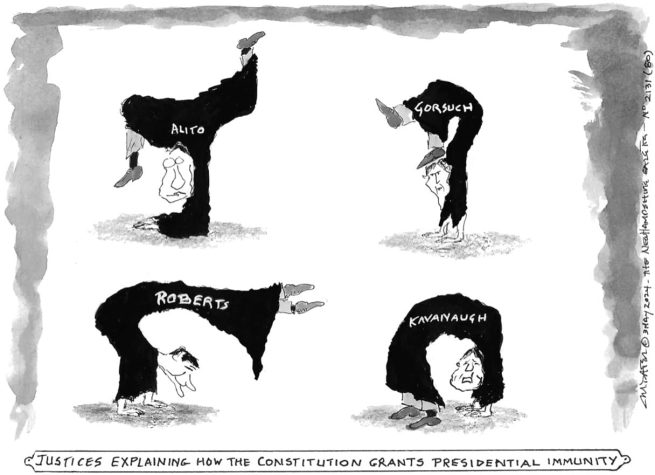
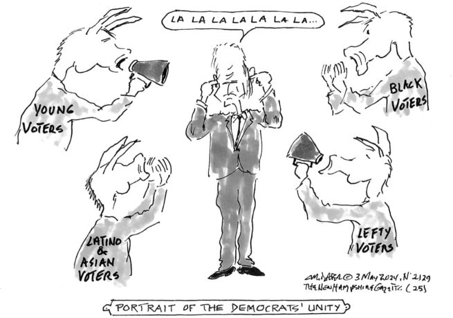
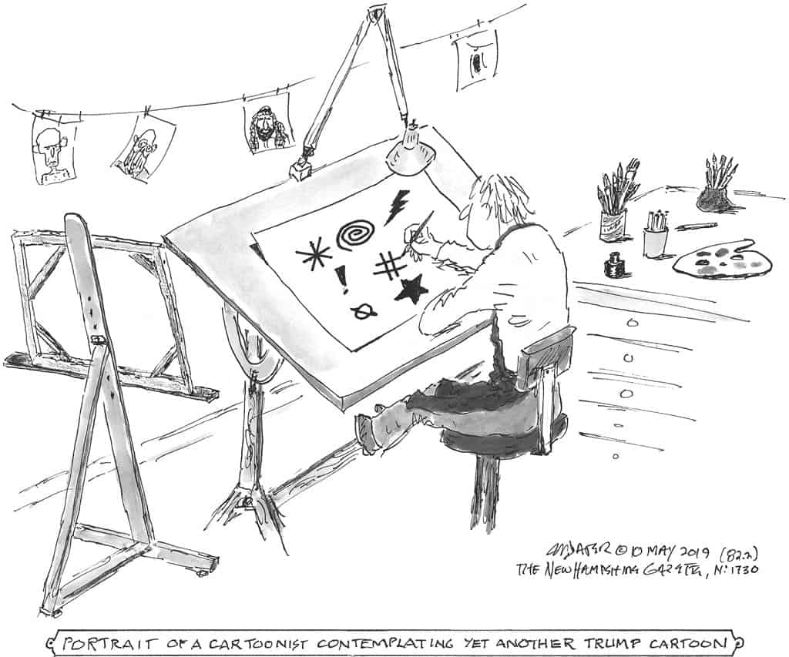

<!DOCTYPE html>
<html lang="en">
<head>
    <meta charset="UTF-8">
    <meta name="viewport" content="width=device-width, initial-scale=1.0">
    <title>The New Hampshire Gazette - The Nation’s Oldest Newspaper™</title>
    <script src="https://cdn.jsdelivr.net/npm/bootstrap-icons@1.7.0/dist/js/bootstrap-icons.js"></script>
    <link href="https://cdn.jsdelivr.net/npm/bootstrap@5.2.3/dist/css/bootstrap.min.css" rel="stylesheet" integrity="sha384-rbsA2VBKQhggwzxH7pPCaAqO46MgnOM80zW1RWuH61DGLwZJEdK2Kadq2F9CUG65" crossorigin="anonymous">
    <link rel="stylesheet" href="styles.css">
</head>
<body>
<nav class="first-navbar navbar-expand-lg">
    <div class="container-fluid">
        <button class="navbar-toggler" type="button" data-bs-toggle="collapse" data-bs-target="#navbarText" aria-controls="navbarText" aria-expanded="false" aria-label="Toggle navigation">
            <span class="navbar-toggler-icon"></span>
        </button>
        <div class="collapse navbar-collapse  " id="navbarText ">
            <ul class="navbar-nav mx-auto my-1">
                <li class="nav-item">
                    <a class="nav-link" href="#">Subscribe/Donate</a>
                </li>
                <li class="nav-item">
                    <a class="nav-link" href="#">About the Gazette</a>
                </li>
                <li class="nav-item">
                    <a class="nav-link" href="#">Where to Get the Gazette</a>
                </li>
                <li class="nav-item">
                    <a class="nav-link" href="#">Advertising</a>
                </li>
                <li class="nav-item">
                    <a class="nav-link" href="#">Masthead</a>
                </li>
                <li class="search-item">
                    <a aria-label="Open Search Bae" href="#">
                        <i class="bi bi-search"></i>
                    </a>
                </li>

            </ul>
        </div>
    </div>
</nav>

<header class="bg-light">
    <div class="container">
        <div class="row justify-content-center">
            <div class="col-md-8 text-center">
                <a class="main-title" href="#"><strong>The New Hampshire Gazette</strong></a>
                <p class="description mb-3">The Nation’s Oldest Newspaper™ • Editor: Steven Fowle • Founded 1756 by Daniel Fowle</p>
            </div>
        </div>
    </div>
</header>

<nav class="second-navbar navbar-expand-lg">
    <div class="container-fluid">
        <button class="navbar-toggler" type="button" data-bs-toggle="collapse" data-bs-target="#navbarNav" aria-controls="navbarNav" aria-expanded="false" aria-label="Toggle navigation">
            <span class="navbar-toggler-icon"></span>
        </button>
        <div class="collapse navbar-collapse " id="navbarNav">
            <ul class="navbar-nav mx-auto my-1">
                <li class="nav-item">
                    <a class="nav-link active" aria-current="page" href="#">The Fortnightly Rant</a>
                </li>
                <li class="nav-item">
                    <a class="nav-link" href="#">The Alleged News®</a>
                </li>
                <li class="nav-item">
                    <a class="nav-link" href="#">Mash Notes, Hate Mail & Other Correspondence</a>
                </li>
                <li class="nav-item">
                    <a class="nav-link" href="#">The Northcountry Chronicle</a>
                </li>
                <li class="nav-item">
                    <a class="nav-link disabled">Page 8</a>
                </li>
            </ul>
        </div>
    </div>
</nav>

<div class="section2 bg-light py-4">
        <div class="container-inside">
        <div class="row justify-content-center">
            <div class="col-lg-6 text-center">
                <h3>The Nation's Oldest Newspaper</h3>
                <h2><strong>A svelte, one-ounce packet of unfettered, non-fiction news.</strong></h2>
                <p><strong>Distributed for free by people just like you.</strong></p>
                <p>This map shows where you can get the latest copy of the <strong><i>Gazette</i></strong></p>
                <p><em><strong>You can be part of our unique distribution system</strong></em></p>
                <button type="button" class="btn btn-outline-dark rounded-0 mb-3">Learn More</button>
            </div>
            <div class="col-lg-6 text-center">
                
        </div>
    </div>
</div>
</div>

<div class="separeted-bar container-fluid">
    <div class="container"><hr></div>

</div>


<div class="section3">
    <div class="container-inside">
        <div class="container text-center">
            <div class="row">
                <div class="col-lg-8">
                    <div class="second-title">
                    <h2>Read the Latest Paper Online</h2>
                    <h2>–=≈=–</h2>
                    </div>
                    <div class="text-start">
                        <a href="#">The Contortionists</a>
                        <div class="text-start-inside">
                            <time>May 4, 2024</time>|
                            <a>The Fortnightly Rant</a>
                        </div>
                        
                        <p>Being ever disposed to find the good in less-than-optimal situations—how else did you think we’ve lasted this long?—we’re going to look for the bright side of the state of our justice system. [Several days later.] Hmmm…. The closest thing we’ve found is a firm conviction that our deepest suspicions had failed to plumb the depths of judicial depravity. More than three years ago we all watched a depraved megalomaniac and career criminal, who had somehow evaded the law long enough to take over a political party and then the White House, whip a mob into a frenzy and then direct it to overthrow the government—a treasonous act that damn near succeeded. Turns out that, with our justice system as it is currently consituted, they probably needn’t have bothered. Give our Supreme Court enough time and it won’t take a despot to turn this country into a fascist theocracy. We already knew this, but just refused to face it. The majority of these berobed bandits committed…</p>
                        <button type="button" class="btn btn-outline-dark rounded-0">Read More</button>
                        <div class="ml-auto">
                            <i class="bi bi-facebook"></i>
                            <i class="bi bi-twitter"></i>
                        </div>
                        <div class="container text-start">
                        <a href="#"><h2>‘Scathing Indictment’ of Big Oil Lies Unveiled on Eve of Senate Hearing</h2></a>
                            <div class="text-start-inside">
                                <time>May 5, 2024</time>|
                                <a>The Alleged News®</a>
                            </div>
                            
                            <p>by Jessica Corbett Two U.S. Congressional committees on Tuesday released a report that “provides a rare glimpse into the extensive efforts undertaken by fossil fuel companies to deceive the public and investors about their knowledge of the effects of their products on climate change and to undermine efforts to curb greenhouse gas emissions.” The report—titled “Denial, Disinformation, and Doublespeak: Big Oil’s Evolving Efforts to Avoid Accountability for Climate Change”—was released after nearly three years of investigation by the Democratic staffs of the House Committee on Oversight and Accountability and the Senate Budget Committee. “For decades, the fossil fuel industry has known about the economic and climate harms of its products but has deceived the American public to keep collecting more than $600 billion each year…</p>
                            <button type="button" class="btn btn-outline-dark rounded-0">Read More</button>
                            <div class="ml-auto">
                                <i class="bi bi-facebook"></i>
                                <i class="bi bi-twitter"></i>
                            </div>
                        </div>
                    </div>
                </div>
                <div class="col-lg-4 text-start">
                    <p><i><strong>Page8</strong></i></p>
                    <div class="container-inside-small">
                        <h2><a href="#" class="btn">Thurs, May 9</a></h2>
                        <p>2017—D. Trump fires J. Comey. 1999—At the University of Chicago, two students competing in a scavenger hunt build a plutonium-producing reactor. They come in second. 1991—Bush aide John Sununu is…</p>
                        <button type="button" class="btn btn-outline-dark rounded-0">Read More</button>
                    </div>
                    <div class="container-inside-small">
                        <h2><a href="#" class="btn">Web, May 8</a></h2>
                        <p>1979—Salvadoran police maintain order in a cathedral; 23 KIA, 70 WIA. 1970—With flags at half mast for Kent State kids shot by National Guardsmen, students protesting in NYC at Wall…</p>
                        <button type="button" class="btn btn-outline-dark rounded-0">Read More</button>
                    </div>
                    <div class="container-inside-small">
                        <h2><a href="#" class="btn">Tues, May 7</a></h2>
                        <p>1999—A U.S. B-2 drops five “smart” bombs on the Chinese embassy in Belgrade: three dead, 27 wounded. 1998—Treasury Secretary Robert Rubin and Federal Reserve Chairman Alan Greenspan successfully quash an…</p>
                        <button type="button" class="btn btn-outline-dark rounded-0">Read More</button>
                    </div>
                    <div class="container-inside-small">
                        <h2><a href="#" class="btn">Mon, May 6</a></h2>
                        <p>2010—An imaginary bus bomb inspires panic in Portsmouth, N.H. 2010—A Londoner scamming from his parents’ basement gives The Invisible Hand of the Market™ jitters: the Dow drops nine pct. in…</p>
                        <button type="button" class="btn btn-outline-dark rounded-0">Read More</button>
                    </div>

                </div>
            </div>
        </div>
    </div>
</div>
<div class="section4">
    <div class="container-inside">
        <div class="container text-center">
            <div class="row">
                <div class="col-lg text-start">
                    <a href="#"><h2>Better Late Than Never</h2></a>
                    <div class="text-start-inside">
                        <time>May 5, 2024</time>|
                        <a>The Northcountry Chronicle</a>
                    </div>
                    <div class="container-inside-small">
                    <p>by W.D. Ehrhart My memoir Vietnam-Perkasie ends in the spring of 1968 with me drunk and passed out in the shower at Marine Corps Air Station, Cherry Point, North Carolina.  It is a fitting way to end the book because that was my mental state…</p>
                    <button type="button" class="btn btn-outline-dark rounded-0">Read More</button>
                </div>
                </div>
                <div class="col-lg text-start">
                    <a href="#"><h2>Gaza: the Terrorist Factory</h2></a>
                    <div class="text-start-inside">
                        <time>May 4, 2024</time>|
                        <a>Mash Notes, Hate Mail & Other Correspondence</a>
                    </div>
                    <div class="container-inside-small">
                        <p>Dear Editor, On April 23, NPR reported on-the-ground observations from Gaza. [https://tinyurl.com/546e9ffz]. Rafah resident Ahmed Barhoum’s wife and 5-year-old daughter were killed when Israelis bombed his house. Saqer-Abd el-Aal’s wife and six children were bombed in their home. What happens when a man looses all…</p>
                        <button type="button" class="btn btn-outline-dark rounded-0">Read More</button>
                    </div>
                </div>
            </div>
        </div>
    </div>
</div>

<div class="section5">
    <div class="container-inside">
        <div class="row">
            <div class="second-title text-center">
                <h2>Download the Latest Paper</h2>
                <h2>–=≈=–</h2>
            </div>
            <a href="#"><h2>Volume 268, No. 17; May 3, 2024</h2></a>

            <div class="col-lg">

                <p><strong>May 3, 2024— </strong>To download this issue of our paper, just click on the image at right.</p>
            </div>
            <div class="col-lg">
                <a href="#"></a>
            </div>
        </div>
    </div>
</div>

<div class="section6 ">
    <div class="container-inside text-center">
        <h2>Politics on paper since October 7, 1756</h2>
        <p class="mb-0">A newspaper, a third cousin five times removed,<br>a freelance insurgency.<a> Watch the video. </a></p>

    </div>
</div>


<div class="selection7">
    <div class="container-inside text-center">
        <h3>Political Cartoons.</h3>
        <h1>Mike Dater's Corner</h1>
        <p>The New Hampshire Gazette’s resident starving artist. Over 20 years of political satire, some<br>whimsical and some occasionally irreverent.</p>
        <p><button type="button" class="btn btn-outline-dark rounded-0">Visit the Gallery</button></p>
        
    </div>
</div>

<div class="selection8">
    <div class="container-inside text-center">
        <p>“Thanks again, as always, for making the now really bad news somewhat easier to tolerate. The truth, which is now seldom spoken, and never spoken by our nation’s “Liar in Chief,” just keeps getting worse and worse. I am thankful for our still (for now, anyway) free press and late night television comedians’ rants posted on Youtube about the state of our country.”</p>
        <p>— E.S., Dover, N.H.</p>
    </div>
</div>

<div class="selection9">
    <div class="container-inside text-center">
        <h2>Admiral Fowle’s Piscataqua River Tidal Guide<br>(Not for Navigational Purposes)</h2>
        <p>Portsmouth, arguably the first town in this country not founded by religious extremists, is bounded on the north and east by the Piscataqua River, the second, third, or fourth fastest-flowing navigable river in the country…<a href="#">read more.</a> </p>
    </div>
</div>

<div class="footer-container">
    <div class="container text-center">
        <div class="row row-cols-auto justify-content-center text-start ">
            <div class="col mt-0">
                <h2>Contributors</h2>
                <li class="list-group-item"><a href="#">Mike Dater</a></li>
                <li class="list-group-item"><a href="#">W.D. Ehrhart</a></li>
                <li class="list-group-item"><a href="#">Jim Hightower</a></li>
                <li class="list-group-item"><a href="#">Jean Stimmell</a></li>
                <div class="col-inside">
                    <h2 class="pt-3">Links</h2>
                    <li class="list-group-item"><a href="#">Local</a></li>
                    <li class="list-group-item"><a href="#">News</a></li>
                    <li class="list-group-item"><a href="#">Papers</a></li>
                    <li class="list-group-item"><a href="#">Politics</a></li>
                    <li class="list-group-item"><a href="#">Veterans</a></li>
                    <li class="list-group-item"><a href="#">Veterans’ Organizations</a></li>
                </div>
            </div>
            <div class="col mt-0">
                <h2>Departments</h2>
                <li class="list-group-item"><a href="#">The Fortnightly Rant</a></li>
                <li class="list-group-item"><a href="#">The Alleged News®</a></li>
                <li class="list-group-item"><a href="#">Mash Notes, Hate Mail &<br>Other Correspondence</a></li>
                <li class="list-group-item"><a href="#">The Northcountry<br>Chronicle</a></li>
                <li class="list-group-item"><a href="#">Page 8</a></li>
                <li class="list-group-item"><a href="#">Digital Issues (PDFs)</a></li>
                <div class="col-inside mt-3">
                    <li class="list-group-item"><a href="#">The Bush/Nazi Stories</a></li>
                    <li class="list-group-item ps-3"><a href="#">Bush/Nazi Link</a></li>
                    <li class="list-group-item ps-3"><a href="#">Confirmed</a></li>
                    <li class="list-group-item ps-3"><a href="#">Bush/Nazi Link</a></li>
                    <li class="list-group-item ps-3"><a href="#">Continued</a></li>
                </div>
            </div>
            <div class="col mt-0">
                <h2>Search the archives</h2>
                <input class="form-control rounded-0 " type="search" placeholder="Search ..." aria-label="Search">


                <div class="col-inside">
                    <h2>People Powered Press</h2>
                    <p>A contribution of any size<br>helps our efforts and our<br>future.</p>
                    <input type="image"src="image/btn_donateCC_LG.gif">
                </div>

            </div>
            <div class="col mt-0">
                <h2>Mailing Information</h2>
                <p>The New HampShire Gazette<br>PO Box756<br>Portsmouth, NH 03802</p>
                <a href="#"><i class="lni lni-twitter"></i></a>

            </div>
        </div>
    </div>


</div>
<footer class="footer text-center">
    <p>©1756-2024 The New Hampshire Gazette - The Nation’s Oldest Newspaper™
        Published 26 times a year on alternating Fridays</p>

</footer>
</body>